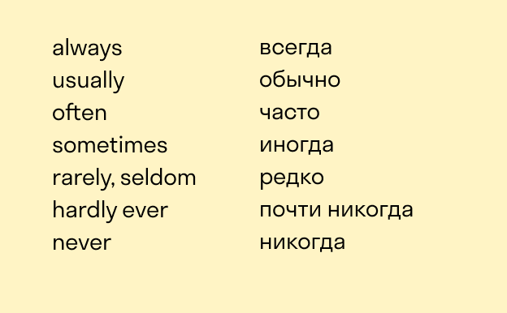

Простое настоящее время используется для описания привычных действий, которые мы совершаем регулярно или прямо сейчас. Для образования формы Present Simple нужно просто взять корневой глагол без изменений и дополнений.
Исключение — случаи, когда подлежащее стоит в третьем лице единственного числа, тогда добавляется суффикс -s (I work — She works). Если окончание глагола — это o, ch, sh, th, ss, gh или z, нужно добавить суффикс -e. Если глагол заканчивается на согласную и y (и подлежащее стоит в третьем лице единственного числа), уберите букву y и добавьте суффикс -ies (study → studies).
Слова-маркеры:
Мы используем простое прошедшее время, чтобы сказать о повторяющемся в прошлом действии. Для обычных глаголов простое прошедшее образуется путём добавления суффикса -ed (или просто -d, если глагол прошедшего времени ужеоканчивается на -e.
Чтобы построить вопросительную или отрицательную форму, понадобится вспомогательный глагол did — знакомый вам do в форме прошедшего. Основной глагол при этом меняться не будет.
Мы используем простое будущее время для обозначения действий, которые ещё не произошли, но точно случатся позже. Чтобы образовать простое будущее, просто поставьте модальный глагол will перед корневой формой основного глагола.
Форма образования: will + смысловой глагол в настоящем.
Ещё Future Simple используют: Для приказов или просьб
Для предсказаний с вероятностью исполнения 50/50
Для моментальных решений
Форма образования: am/is/are + смысловой глагол в настоящем с суффиксом -ing.
Present Continuous используется:
Для того чтобы говорить о чём-то, что происходит в момент повествования. При этом действие ещё не закончено.
Для описания временных ситуаций.
Для того чтобы говорить о повторяющихся действиях.
Чтобы говорить о будущих договорённостях.
С такими словами, как always, чтобы говорить о вещах, которые происходят неоднократно (иногда в контексте «меня это бесит»).
Слова-маркеры:all the time (всё время), always (всегда), constantly (постоянно)
Форма образования глаголов в форме прошедшего продолженного времени: was/were + глагол в настоящем.
Мы используем прошедшее продолженное время для обозначения того, что произошло до и после другого действия.Либо для того, чтобы показать, что что-то продолжалось в течение некоторого времениИ, конечно, мы используем Past Continuous, чтобы говорить о том, что происходило снова и снова
Обычно оно употребляется с наречиями типа always или устойчивыми выражениями вроде all the time.
Форма образования: will + be + смысловой глагол в настоящем.
Что описывает:
Временные действия в будущем.
Описание некой ситуации в конкретный момент в будущем.
Прогнозы с высокой долей вероятности.
Вежливые просьбы.
Форма образования: have/has + глагол в прошедшем.
Present Perfect выражает завершённые действия, которые влияют на настоящее или связаны с ним. Мы используем настоящее совершенное время, когда точное время действия не имеет значения или если действие продолжается до сих пор.
Признаки Present Perfect:
ever, never — когда-либо, никогда;
already, just, not … yet — уже, ещё нет;
so far, until now, up to now — пока что, к настоящему моменту;
for, since — как долго.
Форма образования: had + глагол в прошедшем времени.
Признаки Past Perfect:
for — на протяжении;
by / by the time / when — ко времени, когда;
just — только;
already — уже;
yet — уже;
before/after — до/после.
Форма образования: will + have + глагол в прошедшем.
Признаки:
this time… (this time tomorrow, this time next week, etc.) — в это время… (завтра, на следующей неделе);
when… — когда…;
at + time … (at 7 tomorrow, at midday next Monday, etc.) — в… (в 7 завтра, в полдень в следующий понедельник);
in … (in 2 weeks, in 3 months, in 5 years, etc) — через… (2 недели, 3 месяца, 5 лет);
in …’ time (in 2 weeks’ time, in 3 months’ time, in 5 years time, etc) — в течение… (двух недель, трёх месяцев, 5 лет).
Форма образования: have/has + been + глагол в настоящем с суффиксом -ing.
Present Perfect Continuous показывает продолжающееся в настоящем действие, которое было начато в прошлом. Оно часто используется, чтобы подчеркнуть длительность какого-то процесса.Оно также описывает процесс, который произошёл или всё ещё происходит и который оказывает влияние на настоящее.
Признаки:
all + time word e. g. all day, all night etc. — всё время, весь день, всю ночь и так далее;
how long — как долго;
since, for — с тех пор как, в течение / как долго;
every night, every day etc. — каждую ночь, каждый день и так далее.
Форма образования: had + been + глагол в настоящем с суффиксом -ing.
Прошедшее совершенное продолженное время употребляется так же, как и прошедшее совершенное время, за исключением того, что описывает продолжающиеся действия, произошедшие в прошлом.
Признаки:
for — как долго;
since — с…;
when — когда;
how long — как долго;
before — до.
Форма образования: will + have + been + глагол в настоящем с суффиксом -ing.
Будущее совершенное продолженное мы используем для разговора о действиях, которые начнутся в будущем и продолжатся до определённого момента. Как и Future Perfect и Future Continuous, оно употребляется с определённым указанием на время.
Признаки:
for
since
Герундий – это особая форма глагола, которая выглядит как глагол с окончанием -ing, но имеет качества существительного (поэтому может отвечать на вопрос «Что?»)
Инфинитив – это неопределенная форма глагола, которая отвечает на вопросы «Что делать? Что сделать?»
1.Как подлежащее и дополнение в предложении (когда отвечают на вопрос «Что?»)
Reading is my hobby. – Чтение – мое хобби.
My favourite activity is painting. – Мое любимое занятие – это рисование.
2.С глаголами и фразами, которые обозначают предпочтение:
like – нравиться
love – любить
hate – ненавидеть
dislike – не любить
enjoy – наслаждаться
good at – хорош в
fond of – увлекаться
keen on – интересоваться
I hate waiting. – Я ненавижу ждать.
He is fond of collecting stamps. – Он увлекается коллекционированием марок.
3.После предлогов и фразовых глаголов:
look forward to – ожидать с нетерпением
carry on – продолжать
take up – начинать делать
I am looking forward to going on holiday. – Я с нетерпением жду, когда отправлюсь на каникулы.
The teacher told us to carry on reading. – Учитель сказал нам продолжить чтение.
4.После определенных глаголов:
avoid – избегать
mind – возражать
suggest – предлагать
discuss – обсуждать
keep – продолжать
miss – скучать по
practise – практиковаться
quit – прекращать
recommend – рекомендовать
и др.
We kept running. – Мы продолжили бежать.
Mary suggested ordering pizza. – Мэри предложила заказать пиццу.
5.can’t help – не могу удержаться
don’t mind – не против
It's no point – нет никакого смысла
It’s no good – это не годится
It's worth – стоит того
I couldn’t help laughing. – Я не смог сдержать смех.
It’s pointless persuading them. – Бессмысленно убеждать их.
Залог — это форма глагола. В английском языке есть два залога: действительный (активный, active voice) и страдательный (пассивный, passive voice). В чем разница между ними? Действительный (активный) залог используется тогда, когда субъект сам совершает действие, а страдательный (пассивный), когда на субъект направлено действие.
1.Исполнитель действия неизвестен.
2.Когда мы хотим подчеркнуть важность действия, а не его исполнителя.
3.Когда говорим о неприятной ситуации и не хотим кого-то обвинять.
Conditional sentence или условные предложения — предложения, состоящие из условия (придаточного предложения “if—clause”) и результата (главного предложения “main clause”).
Zero Conditional (нулевое условное предложение) — это условное предложение, которое является истиной: научные факты, законы природы, общепринятые утверждения.
Это самый сдержанный вид условных предложений, потому что подразумевает под собой условие, являющееся истиной. Ему не хватает романтичности: всё должно быть четко. Своего рода флегматик мира условных предложений.
Способ образования :(If + Present Simple), [Present Simple]
First Conditional (условное предложение 1-го типа) — это реальные, осуществимые предположения, относящиеся к будущему времени.
Формула:(If + Present Simple), [Future Simple]
Пример:Unless (=if not) I miss the train, I’ll take it. — Если я не опоздаю на этот поезд, я поеду на нем.
Second Conditional (условные предложения 2-го типа) — это маловероятные или невероятные предположения, относящиеся к настоящему или будущему времени, или советы.
Этот тип условных предложений используется для обозначения практически нереальных действий, которые связаны с настоящим. Часто его используют, чтобы дать какой-то совет. Обычно это несдержанная рекомендация, когда говорящий пытается стать «другим человеком» (конструкция “If I were you…” — На твоем месте…), что походит на тип поведения холерика.
Формула:(If + Past Simple), [would + V1], где V1 — это базовая форма глагола, инфинитив без частицы to.
Пример: — If I were you, I would give up watching this cheesy show. — На твоем месте я бы перестал смотреть это второсортное шоу.
Third Conditional (условные предложения 3-го типа) — предположения, относящиеся к прошедшему времени, а поэтому являющиеся невыполнимыми, — это те действия, которые могли бы произойти, но они не произошли.
Формула:(If + Past Perfect), [would + have + V3], где V3 — это причастие прошедшего времени
Пример: — If I had made more money, I would have bought a better house, but I didn’t. — Если бы я заработал больше денег, я бы купил дом получше, но я этого не сделал.
I wish — эта конструкция, используемая, когда речь идет о желаниях.
1.Мы можем сказать wish somebody something (luck/a happy birthday, etc.) — пожелать кому-то что-то:
— I wish you luck and happiness. — Я желаю тебе удачи и счастья.
2.Мы чаще всего используем wish, чтобы сказать следующее:
мы сожалеем о чем-то;
что-то пошло не так, как нам хотелось бы.
— I wish we could go back. — Я бы хотела, чтобы мы могли вернуться назад.
3.Мы можем использовать wish для описания неисполнимых желаний. Чтобы сказать, что мы сожалеем о чем-то в прошедшем времени, мы используем wish + had:
— It was a stupid thing to say. I wish I hadn’t said it at the party. — Это было такой глупостью. Лучше бы я не говорил этого на вечеринке.